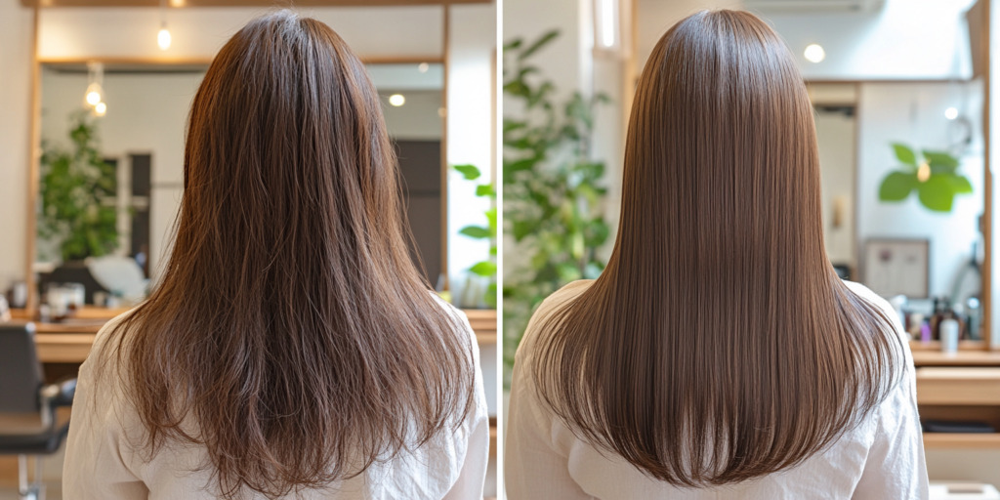

どの美容室に行っても同じと
諦めているあなた
このようなお悩みありませんか？
きれいに染めていいるのに、
なぜか髪が年々パサつく
以前より髪がうねって
広がりやすくなり、艶もない
毎月のカラーで白髪は
隠せても、髪そのものは
元気を失っている気が・・・
朝スタイリングしても、
午後には
ペタっとぺちゃんこに・・・
鏡を見るたび「あれ？
こんなに薄かったっけ？」
と分け目が気になる
「年齢のせいかな」と思いながらも、
どうケアしていいのかわからない
艶髪やうる髪、
まとまりがある髪質に憧れはあるけど、
『髪質は変わらない』
『もうこれ以上は良くならない』
心の中でこんな声が
聞こえていませんか
ソル・エ・テラに訪れる
お客さまの多くも
こんな悩みを抱えています。
ソル・エ・テラならこの悩み、
解決できます。
なぜそんな髪になってしまうの？
ヘアカラーは髪の色素を壊し色を入れるため、髪だけでなく頭皮にもダメージが蓄積。
頭皮のターンオーバーは年齢とともに遅れ、30日ごとのカラーでは回復が間に合いません。
その結果、抜け毛・細毛・乾燥・うねり・ツヤ不足といったトラブルが起こりやすくなります。
【髪と地肌にこんな変化が起こっています】
- 髪が抜けやすくなったのは、地肌が“もうこれ以上耐えられない”というサイン
- 髪が細くなったのは、毛根が十分な栄養を届けられなくなっている証拠
- 髪が乾燥してうねるようになったのは、水分と脂質のバランスが崩れているから
- 髪にツヤがなくなったのは、内側のたんぱく質構造がスカスカになっている状態
【つまり】
あなたの髪の不調は、年齢や体質のせいだけではありません。
知らず知らずのうちに、頭皮と髪に“回復の時間を与えない習慣”が原因になっていたのです。
ソル・エ・テラは施術実績No.1の
ヘナ専門サロンとして、
これまでに
数多くのお客様の悩みを解決してきました。
私たちのオーガニックカラー（ヘナ）は、
単純にオーガニックだということでは
ありません。
もちろん100%天然素材だけを使っています。
髪そのものを内側から変えるのが、
本物のヘナとその独自の技術によって、
染め続けることで髪本来の美しさを
取り戻します。
またすべてのスタイリストは、
専門の知識と技術を日々習得。
あなたの髪のお悩みを深く理解した上、
丁寧に施術を行います。
施術後も安心していただけるように、
ソル・エ・テラでは10日間の
無料お直し保証をお約束しています。
あなたの髪も、こんなに変わる。
ソル・エ・テラのヘナによる髪の改善は、１回目より2回目、3回目と繰り返すほどにその変化を実感していただけます
広がり・パサつきなどに悩んでいた髪が
ヘアカラーである「ヘナ」でまとまりのある艶髪へ
ソル・エ・テラでは丁寧なカウンセリングをもとに、一人ひとりの髪質・悩みに合わせ「全部で10色あるヘナ&ハーブ」で、ご希望に沿った色を提案。
染めるたびにまとまり、艶が増す実感をしていただけます。
繰り返すカラーでダメージを受けた髪が、
なめらかで健康的な髪へ。
『ヘナ』でのヘアカラーは、髪にダメージを与えることが一切ないどころか、頭皮を修復し、本来の美しい髪を取り戻します。ヘアカラーを楽しみながら、芯から美しい髪へと導きます。
縮毛矯正を繰り返した傷んだ髪が、
柔らかく自然なストレート髪へ。
『ヘナ』を繰り返すことにより、くせ毛が改選され、嘘のようにまとまりの良い髪に変化してくる場合があります。
縮毛矯正を何度も繰り返したことで失われた自然な動きと柔らかさを、ヘアカラーである『ヘナ』が髪にやさしく、指通りなめらかなナチュラルストレートへ導きます。
多くのお客様が、初回の施術後に「自分の髪じゃないみたい！」と驚き、通い続けることで、さらに美しい髪質をキープされています。
ぜひ、あなたもソル・エ・テラで『ヘナカラー』をくり返し、美しい髪を実感してください。
ソル・エ・テラが選ばれる理由
現地インド・ラジャスタン州ソジャトで確認した
“本物ヘナ”だけを厳選輸入
市場には“オーガニック”の名ばかりの商品も多い中、私たちは自らインドへ赴き、土づくり・収穫・製造工程まで見届けた最高品質のヘナのみを直輸入しています。ジアミン・過酸化水素などの化学成分は一切不使用で、敏感肌の方も安心してお使いいただけます。
頭皮の再生を促す“植物療法”レベルの施術
ただ染めるのではなく、ヘナの再生力で地肌の環境を整え、髪の畑そのものをよみがえらせます。
染めるたびに髪質が改善
髪が強くなり、ハリ・ツヤ・まとまりが格段にアップ。ダメージからの回復を実感できます。
自然な色味×心地よい香り×癒しの時間
植物の香りに包まれながら、髪も心もリセットできる極上の時間をご提供します。
ソル・エ・テラが選ばれる理由その２
① 施術実績No.1の確かな技術
ソル・エ・テラでは、20年以上『ヘナを専門』に、累計10万人以上の施術を行ってきました。
数多くのお客様の髪に向き合ってきた経験と、また独自開発した技術、そして10色ある色の組み合わせによって、様々な色を表現できるようになっています。
『ヘナだからオレンジ』といった価値観を払しょくし、おしゃれなヘアカラーとして楽しむこともできます。
② パッチテストを含めた丁寧なカウンセリング
初めてヘナをされる方は、アレルギーの不安をも立てる方も多いのではないでしょうか？そのため初回は、使用するヘナ&ハーブのパッチテストをさせていただきます。小さな不安も解消した状態で施術いたします。
③ オーガニックを超える、化学物質ゼロの施術
一般的に『オーガニックカラー』と言われるものは、実は普通のヘアカラーとほとんど同じ構造の薬品で髪を染めます。『ヘナ』はヘナパウダーをお湯で溶いただけのペーストで髪を染めます。そこに石油合成の化学物質は一切介在しません。
髪の畑である頭皮から健康に保ち、そこから生える髪はどんどん元気に美しく輝き始めます。
④ 万全のアフターフォローで安心を約束
施術後10日以内であれば、無料でお直しを行う保証をお付けしています。
施術後もご自宅でのケア方法まで丁寧にアドバイスいたしますので、
サロン帰りの仕上がりをしっかり維持できます。
他のサロンでは感じることのできない、『安心感』『持続性』『実績に裏付けられた信頼』 が、ソル・エ・テラが多くのお客様に選ばれ続ける理由です。
ぜひ、あなた自身の髪でその違いを実感してください。
『髪が変わったら、自分も変われました。』
Case 1
「髪が綺麗ですね!」と言われるようになった。
ロングヘアのくせっ毛。こちらへ通うようになり、「髪が綺麗ですね！」と言われるようになりました。オリジナルのシャンプーとクリームで、頭皮もスッキリして、シャンプーも週一で良い感じです。
(夏は汗をかいたらお湯シャン)こちらを見つける前、他のヘナ専門店にも一年程、通いましたが、ヘナの質が違う気がします！
店長さんとスタッフも元気よく、とても感じの良い雰囲気です♪
移転されて今日から場所を変えてグランドオープンとのこと、
今後も楽しみに通わせていただきます。
Case 2
ハリ、コシ、艶が徐々に
戻ってきて嬉しいです!
通常の美容院で白髪染めを数年やっており髪がパサパサにかなり傷んでしまいました。
くせ毛も酷くなりひろがりで収拾がつかなくなり美容院がお勧めする高額トリートメントで凌いでいましたが、その場限りの効果でした。
ヘナは知ってはいたのですが自宅でやるには負担が大きく、ネットで検索しこちらに来ました。
ヘナはグレードがありこちらのヘナ は高品質であったのも安心でした。
3週間毎に通っていますが、初回の施術から違いを感じました。
髪を根本から修復してくれる感じがあり、ハリコシ、艶が徐々に戻ってきて嬉しいです！
Case 3
ヘナは天然素材なので
頭皮に塗っても心地よい。
私は、髪の毛に30年間近く悩みを抱えていました。ヘッドスパ、再生医療、ミノキ内服、ウィッグ、トータルで1千万近く投資しました。
しかし、全て結果は継続せず。
今回、こちらのサロンには紹介で伺いました。ヘナを試みた所、髪の毛にツヤそしてボリューム更に悩みが軽減され、性格も明るくなったような気がします。
サロンのオーナー様や、スタッフの皆様が気さくで色々と、アドバイスして下さりコンプレックスだった髪の毛が、チャームポイントになりました。
これからも、宜しくお願い致します。そして、ありがとうございました。
ソル・エ・テラは、これからもお客様一人ひとりの想いに寄り添い、ヘナを通してあなたの自信や喜びを引き出します。
あなたもぜひ、この喜びを体感してください。
施術後も、ずっと安心。
あなたの髪に責任を持ちます。
ソル・エ・テラは、お客様の髪に最後まで責任を持ちます。
髪質改善の施術後、ご自宅に帰られてからも安心して美しい髪をキープしていただけるよう、万全のアフターケア体制を整えています。
ホームケアまで
徹底サポート
施術効果を持続させるために、ご自宅でのケア方法も担当スタイリストが丁寧にサポートします。
専属スタイリストによる継続フォロー制度
カウンセリングから施術、アフターフォローまで、同じスタイリストが一貫して担当。髪の変化に合わせた最適なケアをご提案します。
施術後10日間の
無料保証制度
万が一、「もう少しこうしたかった」「仕上がりに気になる点がある」などがございましたら、 施術後10日以内であれば無料でお直しさせていただきます。 些細なことでもお気軽にご相談ください。
髪が変わるまでが私たちの施術です
ソル・エ・テラは髪質改善専門店として、施術後の仕上がりに対する責任だけでなく、あなたが美しい髪を持続できるよう徹底的にフォローします。
安心して、あなたの髪を私たちにお任せください。
ソル・エ・テラでは10日間の無料お直し保証をお約束しています。